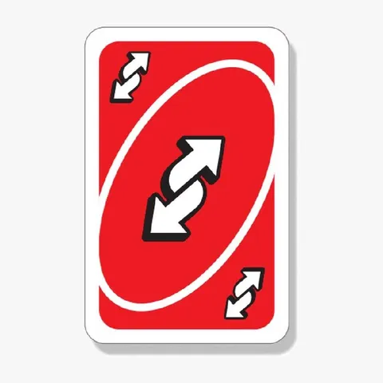

Сценка "на покер-плэнинге спринта":
- Эта задачка - на 5000 токенов.
- Нет, на 8000, потому что надо в монолит изменения вносить.
Сценка "на квартальном планировании":
- Так, ну капасити команды у нас - 250000 токенов, давайте посмотрим, что влезет в Q2.
- Не, на самом деле 200000, Вася уволился, квоту порезали.
Сценка "менеджер поймал разработчика на кофе-пойнте":
- Ну возьмите тикет сверх плана, там делов на 1000 токенов, только конфиг поправить!
- Не можем, и так с обеда чаи гоняем, токены на сегодня кончились.
